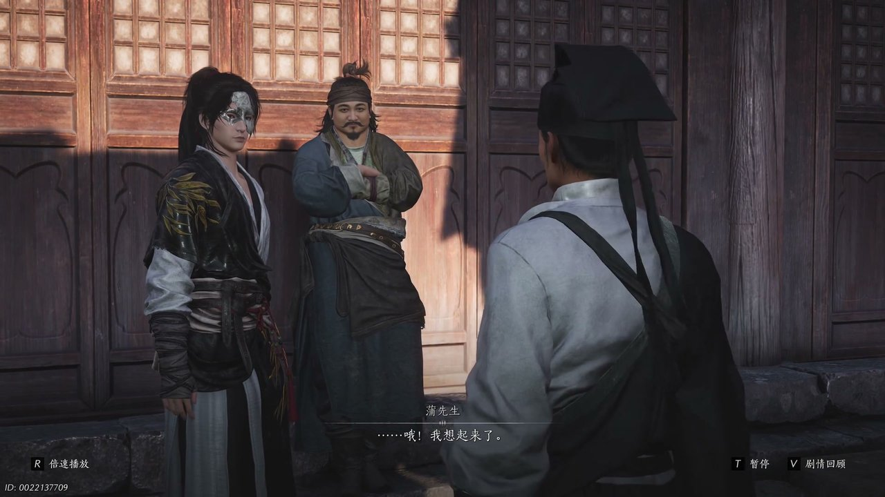
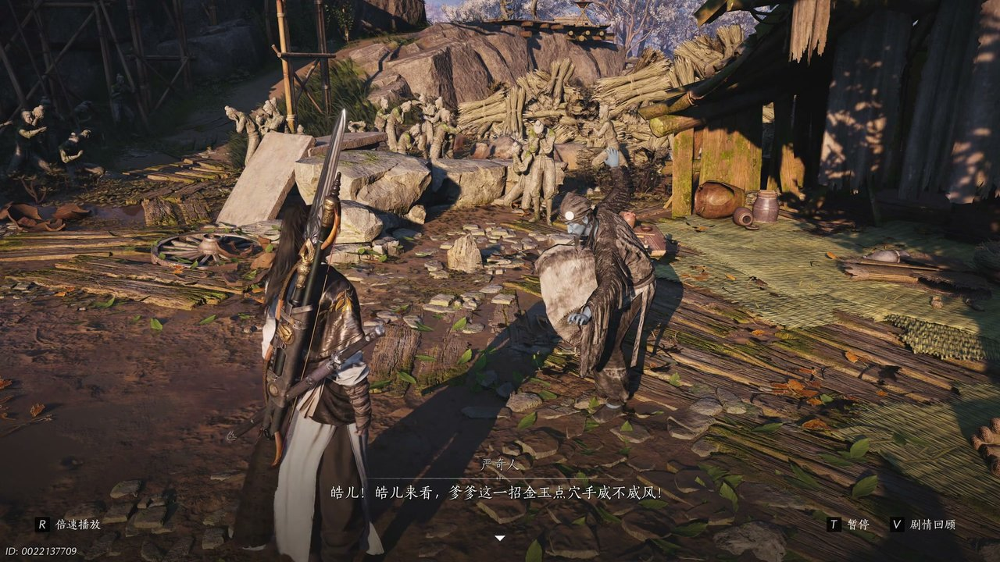
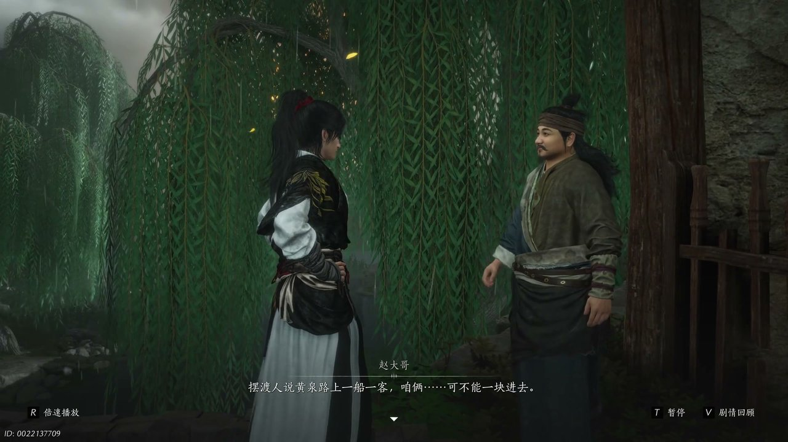
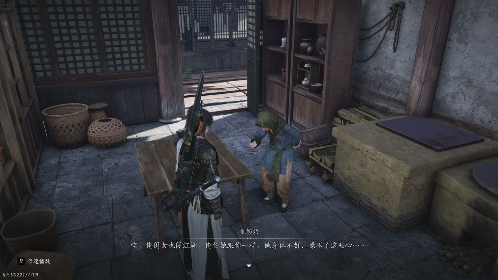
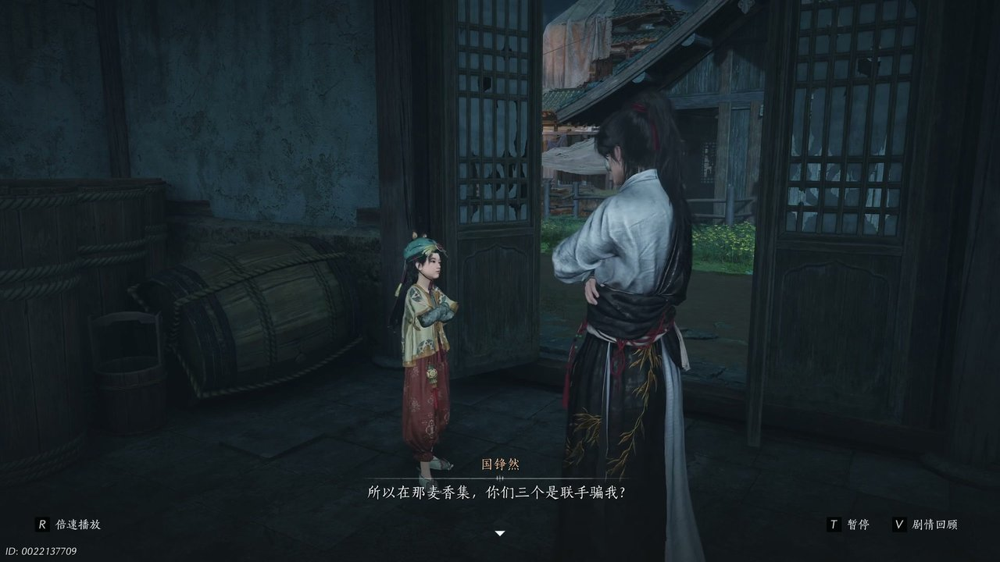
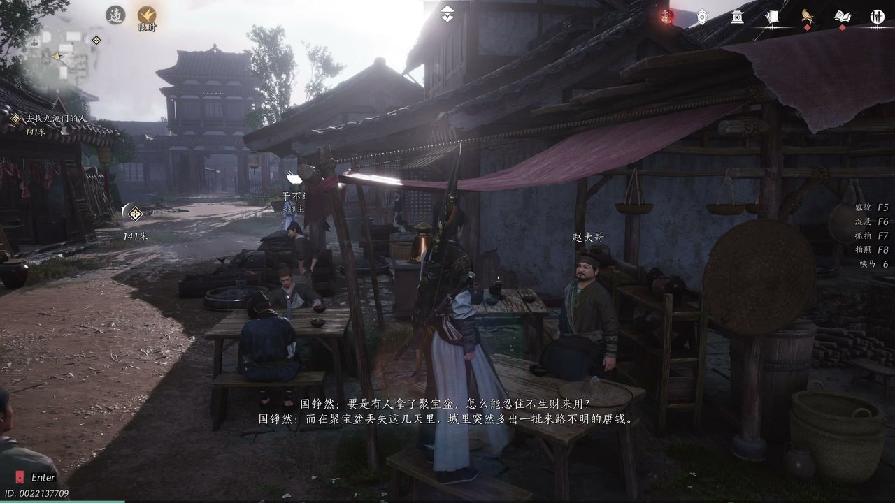

燕云背后的故事：第6集 唐钱
燕云背后的故事：第6集 唐钱

朋友们，上一集咱们说到——宝物不翼而飞、身中断魂毒药、寻访智者蒲万世之；新来的朋友可能纳闷，少东家深陷盗宝冤案，为何还要主动追查线索？简单说，他身负七日断魂丸剧毒，必须找到聚宝盆窃贼，才能洗脱罪名求得解药。可他哪知道，残破面具牵扯出神秘酒流门，藏着开封唐钱泛滥的真相。这不，一行人来到戏院登门拜访蒲万世之，想要解开面具背后的秘密。

戏院之内陈设简单，蒲万世之慵懒倚着木椅，手边摊开一本未曾翻阅的论语，书页大半簇新。少东家皱着眉打量眼前之人，开口问道：“这就是你说的聪慧过人堪比卧龙的万世之先生吗？”蒲万世之略显尴尬地摆手，赵大哥连忙在一旁打圆场，指着对方手中书卷说道：“你看看，蒲先生手无尺卷，出门都带着书呢。”少东家依旧心存疑惑，直言书本大半还是崭新模样，蒲万世之无奈苦笑，制止了赵大哥多余的解释。随后少东家拿出那枚爆炸后残留的面具碎片，蒲万世之目光一凝，瞬间神色认真起来：“好，我想起来了，这是酒流门的面具。”他缓缓讲述酒流门神出鬼没的传闻，说这一门之人无处不在又无迹可寻，甚至传言他们往来阴阳两界，这番话语让少东家心头一沉，追问打探面具主人的办法。蒲万世之坦言酒流门消息隐秘，唯有亲自前往才能探查，还告知想要进入酒流门，要找到角门里的摆渡人激明生购买船票，又叮嘱众人不宜即刻动身，待到次日清晨再前往角门里会合。

辞别蒲万世之后，街巷天色渐暗，天空隐隐有落雪的迹象，墙角立着一动不动的严奇人，神色恍惚。少东家驻足上前，看着神情怪异的老者开口：“是你啊，颜老头，你在这儿怎么动也不动，你疯病又犯了？”严奇人眼中满是执念，将少东家认作自己的儿子颜君浩，拉着他想要传授金玉点穴手法，嘴里不停念叨着招式的精妙。少东家心中不忍，不愿戳破老者的幻想，假意答应学习招式，安抚对方躁动的情绪。严奇人瞬间展露笑颜，语气满是欣慰，感慨许久无人愿意好好听自己说话，继而又陷入思念儿子的悲伤之中，低声哽咽呼喊着孩儿的名字。少东家连忙轻声安抚，转头寻找赵大哥与蒲万世之的身影，这才得知蒲万世之被家中娘子管束，无法一同前往，只将摆渡人的规矩尽数交代给了赵大哥。赵大哥叮嘱少东家，去往酒流门之地暗藏凶险，规矩繁多，暗号、钱财稍有差错便无法进入，二人约定按照摆渡人的规矩，分批前往渡口。

开封城东南角门里偏僻狭窄，巷道昏暗无光，少有行人往来。赵大哥站在渡口旁，神色谨慎地对少东家说道：“百度人说，黄泉路上一船一客，咱俩可不能一块进去。”他抬手示意少东家先行踏入渡口，夸赞少东家身为侠客理应先行一步。少东家没有推辞，点头应允先行进入，走到巷道拐角之时，一名红脸小乞丐突然拦住去路，念出晦涩的暗号词句。少东家思索片刻，重复出暗号内容，顺利通过第一道查验。没过多久，巡逻捕快在街巷四处巡查，龟奶奶带着乔装打扮的小福出面遮掩，谎称二人在此售卖物件，骗过了捕快的搜查。等到捕快离开，少东家才诧异看着眼前的小福，询问对方为何会出现在此地。小福面露慌张，坦言自己居住于此，又得知少东家被官府追捕，主动提出前去解救被扣留在外的赵大哥，还声称自己认识不少有本事的朋友。

龟奶奶屋内陈设简陋，桌上摆放着清水粗茶，少东家向龟奶奶连连道谢，感激对方出手相助躲过官府追查。龟奶奶打量着少东家，随口询问酒流门为何会盯上他手中的红丝手卷，言语间提起一位名叫鬼女的女子，说对方身世可怜，父母遭遇变故，常年在外漂泊受尽苦楚。少东家心中疑惑，连忙询问龟奶奶关于鬼事的传闻，想要借此找寻酒流门的踪迹。龟奶奶沉吟片刻，说起市井间流传的怪事，有百姓夜里昏睡之后醒来躺在街边，恍惚间看见满街鬼影，还有神秘人向路人抛洒唐钱，拿到钱财之人会忘却诸多旧事。二人交谈之际，盈盈忽然现身，一改之前狡黠的模样，笑着与少东家打趣之前骗走饭钱的旧事，想要以此化解二人之间的隔阂。少东家依旧心存芥蒂，要求盈盈归还一半饭钱，盈盈百般推脱，只答应日后慢慢偿还，还主动提出愿意帮忙追查聚宝盆失窃的案子。

屋内气氛陡然变得紧张，少东家骤然醒悟，神色愤怒地看着眼前的几人开口：“你们三个是联手骗我，大姐偷我钱袋，盈盈骗我饭钱，小福再用说辞骗我的粮食。”他质问众人将钱财挪去何处，认定几人刻意欺瞒自己，不愿再相信对方的说辞。一旁的周寡妇面露难色，解释钱财已经拿去买药救治家人，实在无力立刻偿还。少东家心中虽有不满，却也知晓对方处境艰难，可依旧无法接受对方偷窃钱财的行径，直言不能因为他人可怜，便纵容偷盗抢夺的行为。龟奶奶见状连忙出面调解，拿出家中积攒的钱财想要代为偿还，盈盈急忙阻拦母亲，不愿动用家中积蓄，承诺一定会依靠自己的能力挣回钱财，弥补对少东家造成的损失，还挽留二人在家中暂且歇息，躲避官府的搜捕。

夜色渐深，屋内灯火微弱，赵大哥奔波一日疲惫不堪，靠在桌边很快沉沉睡去。少东家独自思索案情，看着龟奶奶收到的一封家书，一眼便看出书信是盈盈代写，明白母女二人一直隐瞒着亲人离世的真相。待赵大哥醒来之后，二人低声交谈案情，少东家说出自己的推断：开封城里来路不明的唐钱，是聚宝盆生出来的。聚宝盆失窃之后，城中突然多出大量唐钱，二者之间必然存在关联，想要查清聚宝盆的下落，就必须追查这批唐钱的来源。此时盈盈、小福与周寡妇推门而入，听闻二人追查唐钱的计划，盈盈提出两全之策，一边借着售卖仿造聚宝盆的物件打探消息，一边收集大量唐钱找寻源头，众人一拍即合，决定联手布局。他们走上街头叫卖铸宝盆，借着市井传言吸引百姓购买，消息很快传开，大批百姓争相购买，不少商贩更是直接将所有货品尽数收购。正当众人收获颇丰之时，史大人带着官兵突然现身，奉命收缴所有来路不明的唐钱，打破了众人的探查计划。
这一集看下来，我最大的感受就是市井之中处处暗藏玄机，人心复杂难测。上一集里我们只知道面具神秘、酒流门隐秘、身负剧毒；到了这一集，结识市井众人、散播铸宝盆传言、追查唐钱踪迹。摆渡人究竟身在何处？酒流门与唐钱有何关联？史大人为何紧盯这批唐钱不放？所有线索相互交织缠绕，少东家借着市井力量探查唐钱源头，却遭到官府阻挠，追查之路再次陷入僵局。下一集核心大事件便是摆脱官府追查，顺着唐钱线索继续深挖酒流门踪迹，少东家剧毒时限不断缩减。核心冲突：直面官府收缴，深挖唐钱根源。观众一：少东家能否避开史大人的追查，顺利接触到酒流门？观众二：盈盈一行人能否依靠市井手段，继续打探聚宝盆下落？下一集关键词：官府阻拦、唐钱溯源、酒流门踪迹。
关于我们
📱 公众号名称：三天游戏
✍️ 作者：曾三天
扫码关注公众号，获取每日最新资讯

商务合作与版权
商务合作 / 内容投稿 / 品牌推广
请关注公众号「三天游戏」后台留言联系
版权声明：本文由作者整理，转载需注明出处。